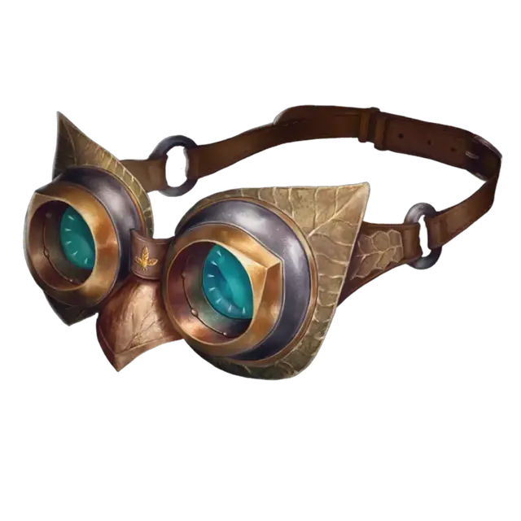

Ночные очки
Goggles of Night
Чудесный предмет, необычный

Рекомендованная стоимость 101-500 зм
Пока вы носите эти тёмные очки, вы получаете тёмное зрение в радиусе 60 футов. Если у вас уже было тёмное зрение, очки увеличивают его радиус на 60 футов.